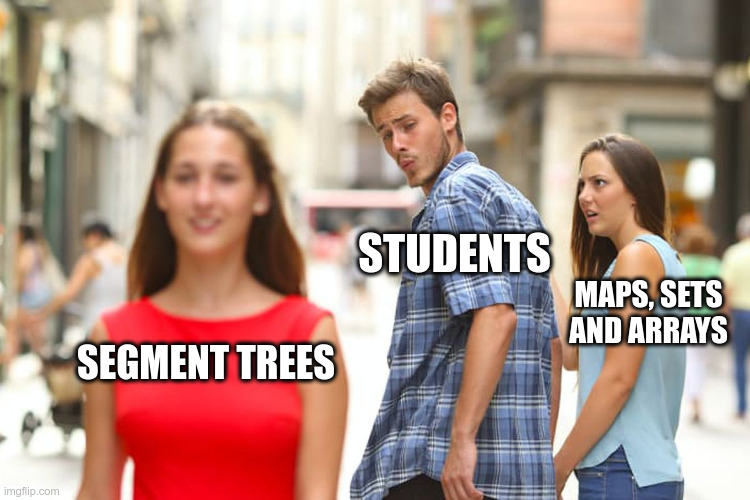

Week #04
Sqrt decomposition, segment trees and variants · Problems: Weekly Problems #04
Main learning outcomes for this class
- Range Minimum Query (RMQ):
- I know the RMQ problems and what is asks for
- I know variants, such as asking for the maximum or the sum (RSQ)
- Square-root (srt) decomposition
- I know the meaning of decomposing an array of size n into buckets of size sqrt(n)
- I know how to answer an RMQ query using sqrt decomposition
- I know how to do a single update in RMQ using sqrt decomposition
- I understand how to adapt it to variations such as RSQ.
- Segments trees:
- I understand the concept of segment trees
- I know how how to implement segment trees using simple arrays
- I know how to answer an RMQ query using segment trees
- I know how to do a single update in RMQ using segment trees
- I understand how to adapt the merge function of a segment tree to more complex variations (including storing several values in a node, like for instance in a merge sort tree)
- I know and understand the concept of lazy propagation to make range updates
- I know and understand the concept of offline processing and how I can (re)sort queries to make a good usage of segment trees
- I know and understand the concept of 2D Segment Trees for generalizing to a 2D case
Study Material
- Videos:
- Segment Trees and Lazy Propagation [42m14s] (my own video from the Topics in Advanced Algorithms course)
- LCA and RMQ (buckets, sparse tables, cartesian trees) [1h34m12s] (my own video from the Topics in Advanced Algorithms course)
- A&DS S02E01. Segment Tree (Pavel Mavrin, ITMO University)
- A&DS S02E02. Segment Trees, Lazy Propagation (Pavel Mavrin, ITMO University)
- General References in websites:
- Range Minimum Query and Lowest Common Ancestor (TopCoder Tutorial)
- Algorithm Gym :: Everything About Segment Trees (CodeForces Blog Post)
- Sqrt Decomposition (E-Maxx Algorithms)
- Segment Trees (E-Maxx Algorithms)
- Example Implementations:
- Example implementation of segment tree: segtree_array.cpp [colorized] | segtree_ptr.cpp [colorized]
[solves https://cses.fi/problemset/task/1648]
- Example implementation of segment tree: segtree_array.cpp [colorized] | segtree_ptr.cpp [colorized]
- Book References:
- Section 9.3 and Chapters 27 and 28 of the Competitive Programmer's Handbook book
- Section 2.3.3 of the Competitive Programming book
(more) Problems to Submit
Besides the evaluation problems, here are some more suggestions:
- [Mooshak PC020] - Census (if you want to test 2D segment trees)
- [CSES 1648] - Dynamic Range Sum Queries (to test the given implementation of segment trees)
- A list of segment tree problems
I want my memes!
😁 When you learn about segment trees

😁 2D segment trees
😁 Lazy propagation

Content by Pedro Ribeiro (DCC/FCUP), migrated from www.dcc.fc.up.pt/~pribeiro/aulas/pc2627/week04.html to demonstrate the UC Design Kit.